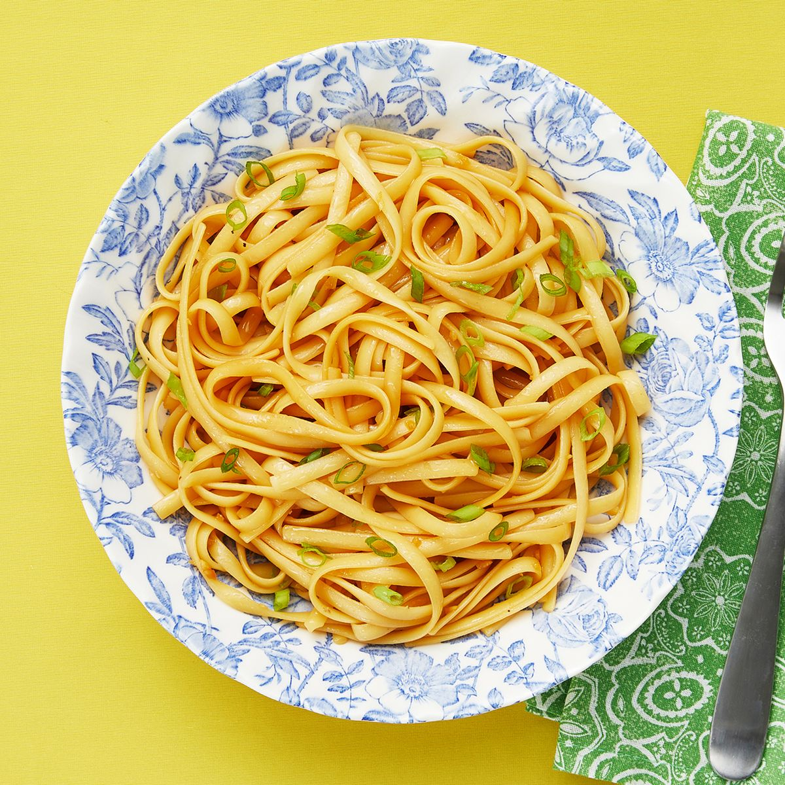

Sesame Noodles

Photo: Ralph Smith
Description
This delightful recipe for Sesame Noodles will provide a easy meal option.
With only a 15 minute prep time, and a 15 minute cook time, you'll run out of your 8 servings extremely quickly!
Ingredients
- 1 (16 ounce) package linguine pasta
- 6 cloves garlic, minced
- 6 tablespoons sugar
- 6 tablespoons safflower oil
- 6 tablespoons rice vinegar
- 6 tablespoons soy sauce
- 2 tablespoons sesame oil
- 2 teaspoons chili sauce
- 6 green onions, sliced
- 1 teaspoon sesame seeds, toasted
Steps
- Bring a pot of lightly salted water to boil. Add pasta, and cook until al dente, about 8 to 10 minutes. Drain, and transfer to a serving bowl.
- Meanwhile, place a saucepan over medium-high heat. Stir in garlic, sugar, oil, vinegar, soy sauce, sesame oil, and chili sauce.
Bring to a boil, stirring constantly, until sugar dissolves.
- Pour sauce over linguine, and toss to coat. Garnish with green onions and sesame seeds.
- Serve hot and enjoy!
Return to the main page!
This recipe was copied word-for-word for a project while learning coding with the Odin Project. The original recipe was created by scoopnana for allrecipes.com.
Link to original recipe page!